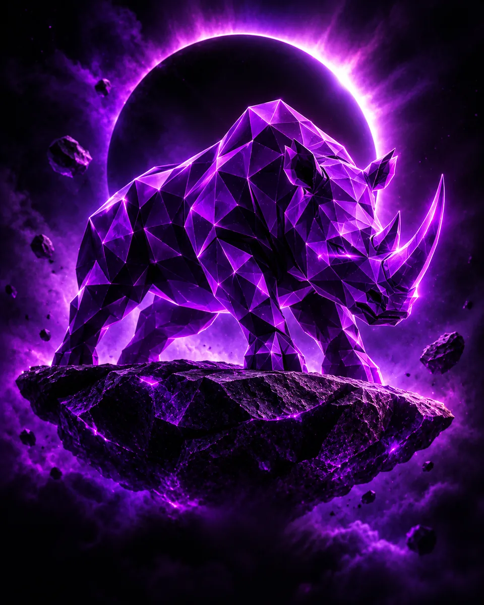
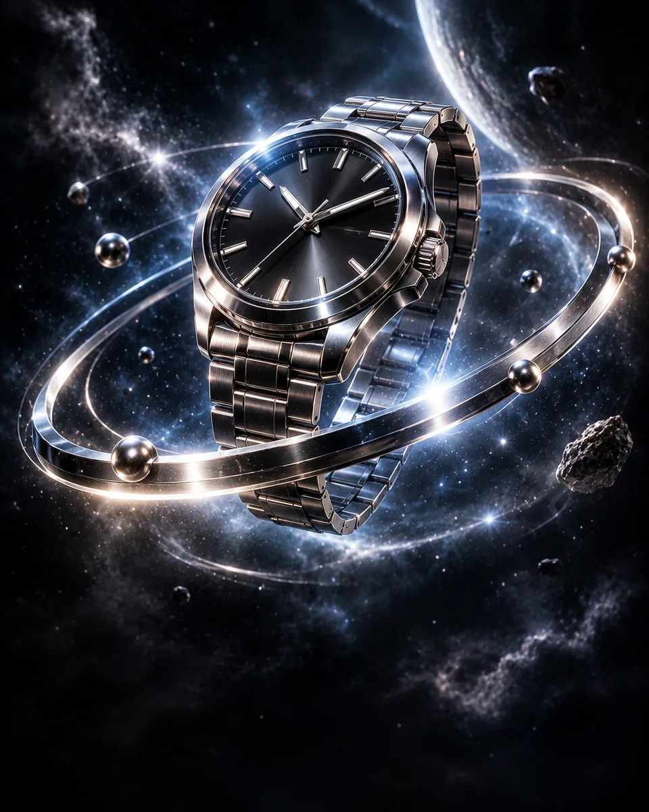
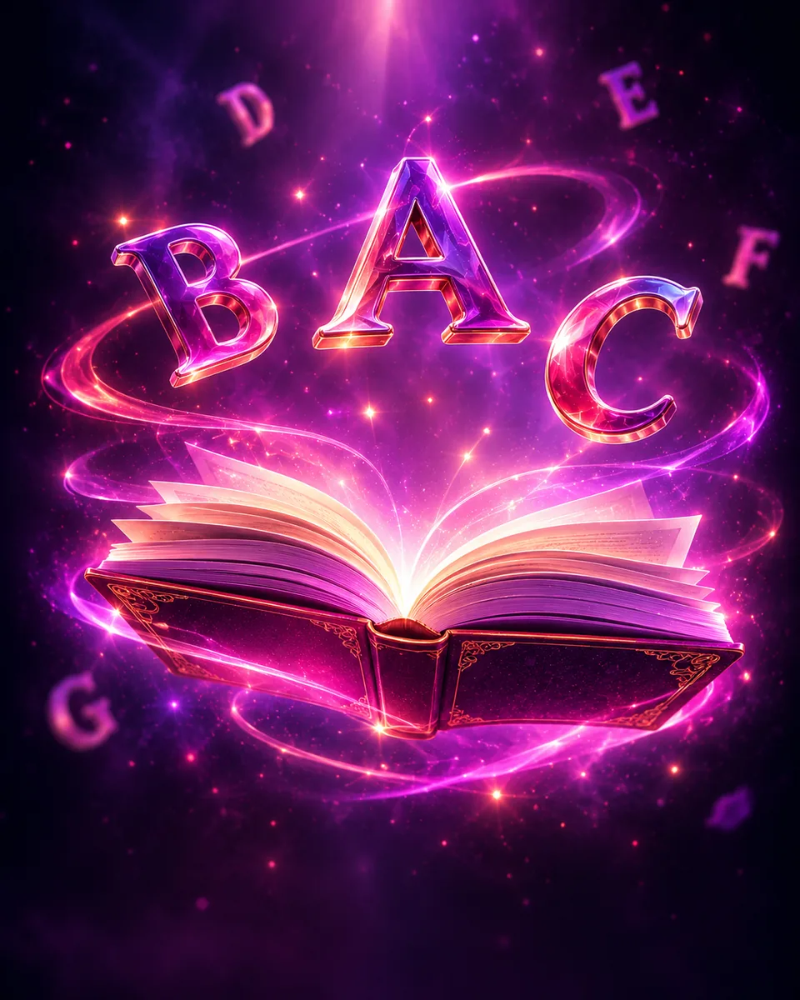

Alinhamento
Conversamos sobre objetivo, público, referências e o que o projeto precisa alcançar.
carregando portfólio
Sou desenvolvedor frontend apaixonado por transformar ideias em experiências digitais rápidas, claras e visualmente marcantes.
Conhecer meu trabalho ↗Interfaces com identidade, movimento e atenção aos detalhes.
Arraste ou use as setas para navegar
Website · 2026Savana PublicidadeSite institucional para uma agência criativa. Experiência · Front-endCéu de OrigemUma atmosfera interativa feita para explorar.
Experimento · 3DÓrbitaTempo, produto e movimento em uma experiência imersiva. Ferramenta · JavaScriptCalculadora de gorjetaUma ferramenta prática, rápida e responsiva. Aplicação · Front-endLista de tarefasOrganização simples para acompanhar o dia.
Website · EducaçãoProjeto ProfessoraUma presença digital acolhedora e autoral. Experiência · 3DSailor MoonUma experiência visual inspirada no universo lunar.Um caminho claro e colaborativo para transformar objetivos em uma experiência digital bem construída.
Conversamos sobre objetivo, público, referências e o que o projeto precisa alcançar.
Organizo conteúdo, estrutura e direção visual para que cada página tenha um propósito.
Desenvolvo a interface responsiva, aplico interações e testo os principais fluxos.
Revisamos os detalhes finais e deixamos tudo preparado para apresentar seu projeto ao mundo.
O que eu uso no dia a dia para sair do design e chegar num site animado e funcional.
Design de interface
Desenvolvimento assistido por IA
Interfaces componentizadas
Animações de rolagem
Lógica e interatividade
Estilo e responsividade
Tratamento de imagem
Criação de sites e protótipos interativos
Comunicação verbal e escrita objetiva, o que facilita o alinhamento com equipe e clientes.
Curiosidade para aprender e se adaptar a novas tecnologias e processos rapidamente.
Iniciativa para resolver problemas assim que aparecem, com compromisso e assiduidade.
Facilidade para colaborar e otimizar processos junto com o time, mantendo a tranquilidade sob desafios.
Se sua pergunta não estiver aqui, pode me chamar diretamente.
Crio sites institucionais, landing pages e experiências web personalizadas. Podemos conversar sobre o formato que melhor atende ao seu objetivo.
Entre em contato contando sua ideia. Vamos alinhar objetivos, conteúdo, referências e os próximos passos para tirar o projeto do papel.
Sim. As interfaces são pensadas para se adaptar a diferentes tamanhos de tela, com navegação e conteúdo confortáveis em dispositivos móveis.
Trabalho com HTML, CSS e JavaScript, além de ferramentas como Figma, React e GSAP de acordo com as necessidades de cada projeto.
Sim. A comunicação e as revisões fazem parte do processo para manter o resultado alinhado com o objetivo combinado.